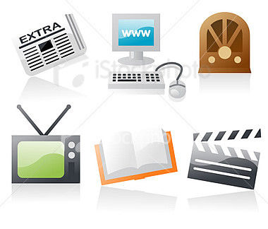

Como medio de comunicación se hace referencia al instrumento o forma de contenido por el cual se realiza el proceso comunicacional o comunicación. Usualmente se utiliza el término para hacer referencia a los medios de comunicación masivos (MCM, medios de comunicación de masas o mas media), sin embargo, otros medios de comunicación, como el teléfono, no son masivos sino interpersonales.
Los medios de comunicación son instrumentos en constante evolución. Muy probablemente la primera forma de comunicarse entre humanos fue la de los signos y señales empleados en la prehistoria, cuyo reflejo en la cultura material son las distintas manifestaciones del arte prehistórico. La aparición de la escritura se toma como hito de inicio de la historia. A partir de ese momento, los cambios económicos y sociales fueron impulsando el nacimiento y desarrollo de distintos medios de comunicación, desde los vinculados a la escritura y su mecanización (imprenta -siglo XV-) hasta los medios audiovisuales ligados a la era de la electricidad (primera mitad del siglo XX) y a la revolución de la informática y las telecomunicaciones (revolución científico-técnica o tercera revolución industrial -desde la segunda mitad del siglo XX-), cada uno de ellos esenciales para las distintas fases del denominado proceso de globalización.

ETIMOLOGÍA
Los medios (plural de “medio”) es un término que refiere a esos medios organizados de la difusión del hecho, la opinión, etc; tales como periódicos, la publicidad, las películas de cine, radio, televisión, revistas, el World Wide Web, los libros, los CD, el DVD, los VCD, los videojuegos, videos y otras formas de publicar. Estos son llamados así por su finalidad que es informar y en algunos casos entretener.
Historia
- Siglo XV: invención de la imprenta (posiblemente en 1450 por Johannes Gutenberg)
- 1605: Johann Carolus se publica en Alemania el primer periódico Relation aller Fürnemmen und gedenckwürdigen Historien
- 1833: Rodolphe Töpffer publica su álbum de historietas Histoire de M. Jabot, al que seguirían otros seis. Su Ensayo sobre fisionomía de 1845 es considerado como el primer texto teórico del medio.
- 1877: Teléfono; El teléfono fue creado conjuntamente por Alexander Graham Bell y Antonio Meucci
- 1895: Cine; los hermanos Lumière proyectaron públicamente la salida de obreros de una fábrica francesa en París.
- 1896: Guillermo Marconi obtuvo la primera patente del mundo sobre la radio
- 1896: Alexander Stepánovich Popov con un sistema completo de recepción-emisión de mensajes telegráficos, transmitió el primer mensaje telegráfico entre dos edificios de la Universidad de San Petersburgo situados a una distancia de 250 m
- 1928: primeras transmisiones comerciales de televisión.
Proposito
El propósito principal de los medios de comunicación es, precisamente, comunicar, pero según su tipo de ideología pueden especializarse en; informar, educar, transmitir, entretener, formar opinión, enseñar, controlar, etc.
Caractericas
Positivas. Las características positivas de los medios de comunicación residen en que posibilitan que amplios contenidos de información lleguen a extendidos lugares del planeta en forma inmediata. Los medios de comunicación, de igual manera, hacen posible que muchas relaciones personales se mantengan unidas o, por lo menos, no desaparezcan por completo. Otro factor positivo se da en el ámbito económico: quien posea el uso de los medios puede generar un determinado tipo de consciencia sobre una especie de producto, es decir, puede generar su propia demanda, ya que los medios muchas veces cumplen la función de formadores de opinión. Entonces, visto desde el ámbito empresarial, es un aspecto ampliamente positivo al hacer posible el marketing y anuncios para el mundo.
Negativas. Las características negativas recaen en la manipulación de la información y el uso de la misma para intereses propios de un grupo específico. En muchos casos, tiende a formar estereotipos, seguidos por muchas personas gracias al alcance que adquiere el mensaje en su difusión (como sucede al generalizar personas o grupos).
Clasificación
Debido a la complejidad de los medios de comunicación, Harry Pross (1972) ha separado estos en tres categorías, a partir de su grado técnico. En 1997 Manfred Faßler contribuyó con una nueva categoría, quedando así la siguiente clasificación:
- Medios primarios (medios propios): están ligados al cuerpo humano. No necesitan el empleo de técnica alguna para la comunicación, que a su vez es sincrónica. Ejemplos: Narrador, Cura, Teatro.
- Medios secundarios (máquinas): Necesitan el empleo de técnicas (tecnologías) del lado del productor de contenidos. El receptor de la información no necesita ningún dispositivo para decodificar la información. Ejemplos: Periódico, revistas, etc.
- Medios terciarios (medios electrónicos): Necesitan el empleo de técnicas (tecnologías) del lado del productor de contenidos y del receptor. Ejemplos: Telegrafía, televisión, discos de música, etc.
- Medios cuaternarios (medios digitales): Permiten tanto la comunicación sincrónica como asincrónica (interacción). Necesitan el empleo de técnicas (tecnologías) del lado del productor de contenidos y del receptor. La división de estos últimos (productor y receptor) tiende a desaparecer, así como el tiempo y la distancia. Los medios cuartenarios o medios digitales son parte de los Nuevos Medios de Comunicación.
Distintos medios de comunicación
Con el avance de la tecnología, han ido desarrollandose diferentes medios de comunicación, que pasamos a citar por orden cronológico:
Libro
Un libro es una colección de uno o más trabajos escritos, usualmente impreso en papel y envuelto en tapas para proteger y organizar el material que contiene. Como tal, es uno de los formatos más antiguos de difusión de información que aún se conservan.
Periódico
los periodicos cientificamente llamados munipiliomition sacado del griego persona que averigua en 1332 cuando llegaron los asiaticos por primera vez a holanda donde se creo el periodico por luauh mecheleni el empresario dueño de empresas luhan. para enterarnos de todo para saber como sigue nuestro pais y para saber lo que pasa ahora en dia.
Historieta
La historieta, convertida en medio de comunicación de masas gracias a la evolución de la prensa decimonónica, vivió su época dorada en cuanto a número de lectores tras la Segunda Guerra Mundial. Con la proliferación de nuevas formas de ocio en la segunda mitad del siglo XX, va dejando de ser un medio masivo en la mayoría de los países, creandose formatos más caros, tales como álbumes o revistas de lujo, y buscando nuevos tipos de lectores.
Teléfono
El teléfono es un dispositivo de telecomunicación diseñado para transmitir conversaciones por medio de señales eléctricas. El teléfono fue creado conjuntamente por Alexander Graham Bell y Antonio Meucci en 187. El telefono nos sirve para cominicarnos con alguien de larga distancia... porque aveces no podemos ir y para eso se puede utilizar el telefono!
Radio
La radio es una tecnología que posibilita la transmisión de señales mediante la modulación de ondas electromagnéticas. Por su alcance electromagnético le era mucho más fácil el poder llegar a lugares lejanos. Corresponden al tipo sonoro. Es un medio "solo-audio" que en la actualidad está recobrando su popularidad.Según Lamb, Hair y McDaniel, escuchar la radio ha tenido un crecimiento paralelo a la población sobre todo por su naturaleza inmediata, portátil, que engrana tan bien con un estilo de vida rápido. Además, según los mencionados autores, los radioescuchadores tienden a prender la radio de manera habitual y en horarios predecibles. Los horarios más populares son los de "las horas de conducir", cuando los que van en su vehículo constituyen un vasto auditorio cautivo. Sus principales ventajas son: Buena aceptación local; selectividad geográfica elevada y demográfica; costo bajo. Además, es bastante económico en comparación con otros medios y es un medio adaptable, es decir, puede cambiarse el mensaje con rapidez. Sus principales limitaciones son: Solo audio; exposición efímera; baja atención (es el medio escuchado a medias); audiencias fragmentadas.
Cine
El Cine fue un paso más en la creación de medios de comunicación masivos. Corresponden al tipo audiovisual. Es un medio audiovisual masivo que permite llegar a un amplio grupo de personas "cautivas" pero con baja selectividad.Sus ventajas son: Audiencia cautiva y mayor nitidez de los anuncios de color. Entre sus desventajas se encuentran: Poco selectivo en cuanto a sexo, edad y nivel socioeconómico, y es bastante caro.
Televisión
La palabra "televisión" es un híbrido de la voz griega "Tele" (distancia) y la latina "visio" (visión). El término televisión se refiere a todos los aspectos de transmisión y programación, que busca entretener e informar al televidente con una gran diversidad de programas.
Internet
Internet es un método de interconexión de redes de computadoras implementado en un conjunto de protocolos llamados TCP/IP y garantiza que redes físicas heterogéneas funcionen como una red (lógica) única. Hace su aparición por primera vez en 1969, cuando ARPAnet establece su primera conexión entre tres universidades en California y una en Utah. Ha tenido la mayor expansión en relación a su corta edad comparada por la extensión de este medio. Su presencia en todo el mundo, hace de Internet un medio masivo, donde cada uno puede informarse de diversos temas en las ediciones digitales de los periódicos, o escribir según sus ideas en blogs y fotologs o subir material audiovisual como en el popular sitio YouTube. Algunos dicen que esto convierte en los principales actores de la internet a los propios usuarios.